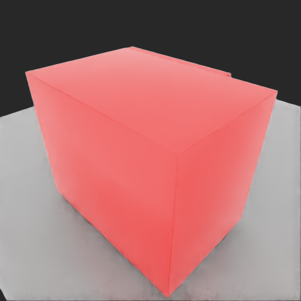

资产维度
LabUtopia 的价值不只在轨迹，核心还包括实验室场景、容器、仪器、家具交互件、机器人和材质贴图资产。
5 个主场景实验室资产族本周把 LabUtopia 跑通后的结果从几个平行维度重新梳理：哪些实验室资产可以复用、29 个任务分别覆盖什么能力、当前泛化做到什么程度、expert 轨迹到底怎么产生，以及后续接入 EBench 的判断。
LabUtopia 的价值不只在轨迹，核心还包括实验室场景、容器、仪器、家具交互件、机器人和材质贴图资产。
5 个主场景实验室资产族本周确认 29 个主 config，覆盖 pick、place、pour、press、open/close、clean、device operation、navigation 等任务。
29 config多层任务族当前主要是任务内局部泛化：物体/目标位置随机、小规模目标切换、材质池、按钮干扰和导航起终点随机。
20 / 29 有位置随机不是分轴 benchmark轨迹是 repo 的 expert controller 在线计算出来的，不是真人遥操作或 repo 自带的人类 demo；本次 28 条成功，1 条失败样例有视频。
computed trajectory非真人采集LabUtopia 适合作为 EBench/GenManip 的实验室任务包来源，但需要按 EBench 口径补 task config、metric、split 和验证闭环。
可迁移需重建评测口径原生 DryingBox_01 已完成 hand-built overlay 的 Acceptance Stage 1-7；新的 ConvertAsset AAN-ready package 也已完成 LabUtopia / GenManip consumer Stage 1-4b，并用 fresh run_id 跑通本地 EBench live smoke。边界仍要保留：这不是 official leaderboard 复现，policy score 仍为 0.0，Stage 4b 不证明 full visual material parity。
这条新证据线回答一个更工程化的问题：不是“我们能不能手工把 DryingBox 调到能跑”，而是“ConvertAsset 产出的资产包，LabUtopia / GenManip 能不能不本地修包、直接消费进 EBench task”。当前答案是：DryingBox 已经通过 Stage 1-5；Stage 6 replication hardening 也已 PASS：MuffleFurnace 和 Beaker_01 都完成 Stage 1-4b generic live smoke。task/evaluator.yaml 的 runtime 执行会作为后续 semantic evaluator 工作单独推进。
证明资产包本身合格。它记录了 USD dependency closure、package-level material closure、physics / articulation where applicable、producer Isaac 4.1 runtime_smoke 和 benchmark_contract。
PM 可以说：AAN package material gate passed，remote MDL / texture dependencies 已有 package-local evidence。
证明 EBench 任务链路能消费这个包。DryingBox Stage 4b 用 AAN-specific wrapper 跑 level1_open_door，并记录 submit / probe / eval、result_info.json、stdout/stderr 和 run-id 一致性。
PM 可以说：DryingBox 本地 EBench / GenManip live smoke passed；MuffleFurnace 和 Beaker_01 generic Stage 4b live smoke passed。仍不能说 official score、semantic task success 或 policy success。


| 证据项 | 位置 / 值 | 产品解释 |
|---|---|---|
| Stage 4b manifest | aan_dryingbox_runtime_smoke_20260701_085521.json |
唯一允许把 AAN consumer live smoke 说成 PASS 的 final manifest。 |
| 运行证据目录 | aan_runtime_smoke_labutopia_aan_lift2_stage4b_20260701_085521/打开 probe JSON |
包含 submit / eval / probe / builder 的 stdout、stderr、exitcode 和 probe JSON；静态页面只直接链接具体文件。 |
| 运行结果 | reset=true、step=true、render=true、metric=true、logging=true、result_info_exists=true |
证明资产包进入本地 EBench / GenManip runtime 后，任务链路可执行、可出图、可产生日志和指标。 |
| 策略得分 | score=0.0、success_rate=0 |
这说明当前 policy 没完成开门，不是 AAN package 接入失败。 |
| 材质 warning | mdl_compiler_error_count=636 |
不阻塞 Stage 4b smoke PASS，但阻止 full visual material parity / source-native material closure 这类更强声明。 |
| Stage 6 复制资产 | aan_stage6_replication_summary_20260701_1145.jsonMuffleFurnace、Beaker_01 |
两个非 DryingBox 资产已完成收货、验货、task-root 挂载 dry-run、no-local-repair verify、Stage 4a runtime adapter preflight 和 generic Stage 4b live smoke；Stage 6 replication hardening 已 PASS。 |
| MuffleFurnace Stage 4b | aan_muffle_furnace_runtime_smoke_20260701_105508.jsonrun_id=labutopia_aan_muf4b_20260701_104829 |
reset、step、render、metric、logging 和 result_info.json 均通过；score=0.0 是 generic smoke 边界，不代表 semantic task success；mdl_compiler_error_count=264 阻止 full visual parity 声明。 |
| Beaker_01 Stage 4b | aan_beaker_01_runtime_smoke_20260701_1135.jsonrun_id=labutopia_aan_beak4b_envfix_20260701_1135 |
reset、step、render、metric、logging 和 result_info.json 均通过；前两次失败是 consumer runtime 环境变量诊断，不是资产失败；mdl_compiler_error_count=8 阻止 full visual parity 声明。 |
| Beaker_01 启动环境 | CUROBO_SRCPATH=$PYENV/bin:$PATHLD_LIBRARY_PATH |
第一次缺 cuRobo 路径，第二次缺 ninja / libcudart.so.11.0；final run 只补齐现有 conda env 的启动变量，没有修改 AAN package、USD、MDL 或 articulation。 |
| Stage 6 后续 | stage6_minimum_acceptance_status=PASSstage4b_live_smoke_status=PASS |
下一步是把 AAN runtime env bootstrap 标准化，并单独推进 semantic evaluator、official score 和 full visual/material parity；这些不和 smoke pass 混在一起。 |
现在可以说：DryingBox AAN-ready package 已被 LabUtopia / GenManip consumer 接入 level1_open_door，并通过本地 EBench / GenManip live smoke；旧 overlay 没有被复用。Stage 6 已把收货、验货、挂载 dry-run、no-local-repair verify、Stage 4a runtime adapter preflight 和 generic Stage 4b live smoke 复制到 MuffleFurnace 和 Beaker_01，所以 Stage 6 replication hardening 已 PASS。
仍不能说：official leaderboard score 已完成；policy/model 已经解决任务；MuffleFurnace 或 Beaker_01 generic smoke 等于 semantic task success；任意 USD / MJCF / deformable / liquid 都自动可评；full visual material parity 已证明。
submit: gmp submit ebench/labutopia_lab_poc/aan_lift2_candidate/level1_open_door.yml --run_id labutopia_aan_lift2_stage4b_20260701_085521 --host 127.0.0.1 --port 18191 eval: python -m genmanip_client.cli eval --worker_ids 0 --run_id labutopia_aan_lift2_stage4b_20260701_085521 --host 127.0.0.1 --port 18191 -a r5a -g lift2 -c joint_position --no_save_process --frame_save_interval 0 --chunk_size 1 result_info: saved/eval_results/ebench/labutopia_aan_lift2_stage4b_20260701_085521/ebench/labutopia_lab_poc/aan_lift2_candidate/level1_open_door/000/result_info.json
口径：文件层面统计 assets/，业务层面按 29 个主 config 实际引用的 /World/... prim。这里的数量是“任务里出现的资产角色/资源包”，不等同于底层 mesh 零件数。
| 资产种类 | 当前规模 / 代表对象 | 支撑的产品能力 | 复用判断 |
|---|---|---|---|
| 实验室场景 | 5 个主场景：lab_001、lab_003、hard_task、clock、navigation_lab。 |
桌面操作、长程清洗任务、液体混合、移动导航。 | 可作为 LabUtopia 的核心场景底座；跨 benchmark 使用需要重新适配任务接口。 |
| 容器类 | 8 个烧杯相关角色：beaker、beaker1、beaker2、beaker3、beaker_2、beaker_hard_1、beaker_hard_2、target_beaker；另有 3 个锥形瓶和 1 个量筒。 |
pick、place、pour、shake、transport、clean beaker 等核心实验动作。 | 最高复用价值资产；数量口径是 prim/角色名，不是不同物理模型数。 |
| 操作工具 | glass_rod、test_tube_rack。 |
搅拌、工具抓取、组合任务中的中间操作对象。 | 当前种类偏少，但很适合扩展更多实验工具。 |
| 仪器设备 | 6 类：DryingBox_01/02/03、MuffleFurnace、heat_device、instrument。 |
开关门、加热、按钮操作、设备操作、长程任务。 | 产品展示价值高；showcase 前要重点检查材质、贴图和相机视角。 |
| 家具交互件 | 2 个柜体/抽屉：Cabinet_01、Cabinet_02；3 类桌面；4 类目标平台；5 类按钮角色。 |
开抽屉、放置、按按钮、任务目标区域定义。 | 适合做基础 manipulation 能力评测，但需要统一命名和交互语义。 |
| 机器人与相机 | 实际使用：Franka、Ridgebase；另有 Fetch 资产存在但本次 29 个主 config 未使用。相机包含固定视角、腕部相机、移动底盘相机。 |
桌面机械臂操作、移动操作、导航、多视角观察。 | Franka/Ridgebase 是当前主线；Fetch 可作为后续扩展候选。 |
| 材质与贴图 | 全 repo 约 330 个 MDL 材质、110 个图片贴图；化学实验室资产包占大头。 | 视觉真实度、对象可辨识度、视频展示效果。 | 可复用，但需要 asset QA；本周视频中已见少量 MDL/texture warning。 |
| 导航资产 | navigation_lab 场景、barrier/lab_1.png 障碍地图、导航配置。 |
Level5 navigation 和 mobile manipulation。 | 可作为移动任务基础；和桌面实验资产不是同一套任务接口。 |
| 化学属性库 | assets/properties.json 含 291 条化合物属性。 |
支撑材料/液体/化学语义扩展，不直接等同于 3D 物体。 | 适合作为任务文本、材料随机化和科学语义增强的候选资源。 |
口径：每一行对应一个本周批跑的主 config/*.yaml。这里用产品经理能读懂的一句话描述机器人动作目标；技术追溯仍以 config 名、task type 和 controller 为准。
| Config | 一句话说明 | 产品能力 | 本次结果 |
|---|---|---|---|
level1_close_door |
机械臂关闭干燥箱 DryingBox_03 的门。 |
基础关门 / 设备门交互 | 成功 |
level1_close_drawer |
机械臂关闭柜体 Cabinet_02 的抽屉。 |
基础关抽屉 / 家具交互 | 成功 |
level1_open_door |
机械臂打开干燥箱 DryingBox_01 的门。 |
基础开门 / 设备门交互 | 成功 |
level1_open_drawer |
机械臂打开柜体 Cabinet_01 的抽屉。 |
基础开抽屉 / 家具交互 | 成功 |
level1_pick |
机械臂从实验台上抓起一个锥形瓶。 | 基础抓取 | 成功 |
level1_place |
机械臂抓起烧杯并放到指定目标平台。 | 抓取 + 放置 | 成功 |
level1_pour |
机械臂拿起一个烧杯，把液体倒入另一个烧杯。 | 倒液 / 容器对准 | 成功 |
level1_press |
机械臂移动到仪器面板并按下目标按钮。 | 按钮操作 | 成功 |
level1_shake |
机械臂抓起烧杯并执行摇晃动作。 | 容器摇晃 / 混合前置动作 | 成功 |
level1_stir |
机械臂拿起玻璃棒，在烧杯中完成搅拌。 | 工具使用 / 搅拌 | 成功 |
level2_HeatLiquid |
机械臂把烧杯放到加热设备上，并按按钮启动加热。 | 放置 + 按钮 + 加热流程 | 成功 |
level2_PourLiquid |
机械臂用组合 controller 完成抓取烧杯和倒液。 | 组合倒液流程 | 成功 |
level2_ShakeBeaker |
机械臂用烧杯专用 controller 抓起烧杯并摇匀。 | 容器专用摇晃 | 成功 |
level2_StirGlassrod |
机械臂抓取玻璃棒，并在目标烧杯中搅拌。 | 工具抓取 + 搅拌 | 成功 |
level2_TransportBeaker |
机械臂把烧杯搬运到目标平台。 | 容器转运 | 成功 |
level2_openclose |
机械臂对同一个柜体抽屉完成打开再关闭。 | 连续开合 / 状态切换 | 成功 |
level3_HeatLiquid |
机械臂在更复杂配置下完成“放烧杯到加热器并按按钮”。 | 多步骤加热任务 | 成功 |
level3_PourLiquid |
机械臂在量筒、锥形瓶、烧杯等多容器场景中完成倒液。 | 多对象倒液 / 目标容器选择 | 成功 |
level3_TransportBeaker |
机械臂在更高等级配置下搬运烧杯到目标平台。 | 高等级容器转运 | 成功 |
level3_open |
机械臂在多个可开设备中执行开门动作。 | 多设备开门 / 目标泛化 | 成功 |
level3_pick |
机械臂在多个锥形瓶候选中抓取目标瓶子。 | 多对象抓取 | 成功 |
level3_press |
机械臂在目标按钮和干扰按钮之间选择并按下目标按钮。 | 按钮选择 / 抗干扰操作 | 成功 |
level4_CleanBeaker |
机械臂在 hard task 场景中用两个烧杯完成倒液、摇晃和放置的清洗流程。 | 长程实验操作 | 成功 |
level4_CleanBeaker7Policy |
同一清洗烧杯任务的 7-policy 版本，本次暴露了 controller 参数不匹配问题。 | 长程策略拆分验证 | video-only，未算成功轨迹 |
level4_DeviceOperation |
机械臂打开设备门、放入两个烧杯，并按下设备按钮。 | 设备操作长程流程 | 成功 |
level4_LiquidMixing |
机械臂连续抓取多个容器倒液混合，最后按按钮完成流程。 | 多容器混合 / 长程组合任务 | 成功 |
level4_OpenTransportPour |
机械臂组合执行开门、搬运烧杯、倒液和再放置。 | 开门 + 转运 + 倒液组合 | 成功 |
level5_Mobile_manipulation |
移动底盘先导航到目标附近，再用机械臂抓取烧杯。 | 移动操作 / mobile manipulation | 成功 |
level5_Navigation |
移动机器人沿导航路径从起点移动到目标点。 | 移动导航 | 成功 |
结论：LabUtopia 不是完全没有泛化，它已经有任务内局部泛化，主要发生在固定实验室场景里的物体位置、目标物体、材质、按钮干扰和导航起终点上。但它还不是 EBench 那种按 val_train / val_unseen / test、对象/背景/指令等维度组织的 benchmark 级泛化。
29 个主配置里，20 个写了物体或目标 position_range。这是当前最稳定、最普遍的泛化能力。
level3 的 pick、open、pour、press、transport 等任务引入多目标、材质池、按钮颜色和 train/test 材质设计。
level3 泛化配置小规模 OOD当前没有标准 split、泛化轴、对象库采样、背景随机、指令改写和诊断报告。迁到 EBench 后，这些需要重建。
不是分轴 benchmark需要补评测口径| 泛化维度 | LabUtopia 已做到什么 | 代表任务 | 产品侧理解 |
|---|---|---|---|
| 物体/目标位置 | 多数任务在 reset 时从 position_range 里随机采样位置；pick、place、pour、transport、device operation 等任务都用到。 |
level1_pick、level1_place、level2_TransportBeaker、level4_DeviceOperation |
模型不能只记住一个固定坐标；但扰动范围主要还在同一张实验台或同一套设备附近。 |
| 目标物体切换 | 部分 level3 配置在固定 USD 里预放多个对象，当前目标显示，其他目标隐藏或移远。 | level3_pick、level3_open、level3_PourLiquid |
已经能验证“同类任务换一个实验器具”的适应性；但不是从大规模对象库里动态抽样。 |
| 材质/外观 | 5 个配置有材质池和 test_materials 设计；其中 level3_PourLiquid、level3_press 配置了 test 材质。 |
level3_pick、level3_open、level3_PourLiquid、level3_press、level3_TransportBeaker |
有小规模外观 OOD 设计；但这次 expert 复现主要跑 collect/video，不等于已经系统评过材质泛化。 |
| 按钮与干扰目标 | press 类任务会随机打乱目标按钮和干扰按钮的位置；level3 还会扩展按钮颜色数量。 | level1_press、level3_press、level3_HeatLiquid |
能测试模型是否找对按钮，而不是只记住固定按钮位置；level3 比 level1 更接近泛化测试。 |
| 移动导航 | 导航任务会在 free space 中随机生成起点/终点，或随机起点后导航到抓取目标附近。 | level5_Navigation、level5_Mobile_manipulation |
已经包含移动场景下的路径变化；但目前主要在一个 navigation lab 场景内变化。 |
| 长程任务 | level4/level5 把开门、搬运、倒液、清洗、设备操作等动作串成多阶段流程，局部对象位置也会扰动。 | level4_CleanBeaker、level4_OpenTransportPour、level4_DeviceOperation |
这是 LabUtopia 的强项：实验室长程操作语义比较有价值；但“长程”本身不等于 benchmark 级泛化。 |
| 尚未系统做到 | 没有标准 train/unseen/test split；没有对象/背景/指令/Mixed 泛化轴；没有相机、光照、房间级随机化；没有指令多措辞评测。 | 当前 29 个主配置整体 | 如果接入 EBench，LabUtopia 更适合作为“实验室任务族”的资产和任务来源，泛化评测体系需要按 EBench 口径补齐。 |
一句话汇报：LabUtopia 当前做到的是“固定实验室场景内的小范围泛化”，价值在真实实验器具和长程科学操作；如果要变成 EBench 式泛化评测，需要把这些任务重新组织成 split、对象池、layout 随机、metric 和诊断报告。
结论：方向可行，推荐形态是把 LabUtopia 做成 EBench/GenManip 的实验室任务包，而不是把 LabUtopia 运行时整体塞进 EBench。这样 EBench 仍然负责统一 reset、step、观测、动作接口和评分，LabUtopia 贡献实验室资产、任务语义和可参考的 expert 轨迹。
按 EBench server 侧的 SceneConfig 和 task package 规范接入：资产进入 EBench-Assets/GenManip 资产目录，任务进入 GenManip 的 task config。
LabUtopia 的 expert controller 适合做冒烟验证和参考答案，不适合作为 EBench 正式评测接口。正式评测要让模型通过 EvalClient 输出标准 action，由 EBench 判分。
不是简单复制配置评测口径重建level1_pick、level1_place、level1_open_door 已在 Lift2 candidate 配置中完成 reset、step、result_info 和 metric logging；下一步才是扩大任务面与提升策略得分。
| 接入环节 | 需要确认的事情 | 产品侧影响 |
|---|---|---|
| 资产加载 | LabUtopia 的 USD、MDL、贴图、门/抽屉/按钮 articulation 要放进 GenManip/EBench 的资产目录，并修正相对路径和材质环境变量。 | 决定实验室场景能不能稳定进入 EBench，而不是只在 LabUtopia 自己的入口里可见。 |
| 任务配置 | LabUtopia 的 task_type/controller_type 要翻译成 EBench 使用的 SceneConfig：usd_name、table_uid、object_config、camera、episode 步数和指令。 |
决定这些任务能否像 EBench 原生任务一样被排队、reset 和批量评测。 |
| 评分逻辑 | LabUtopia expert 的“完成”要改写成 EBench metric，例如对象到位、按钮按下、门开合状态、容器转运完成等；倒液、搅拌、清洗类任务需要更细的代理指标。 | 决定 leaderboard 和诊断报告能否公平解释结果，而不是只得到一段视频。 |
| 动作接口 | EBench 侧模型输出的是标准 action dict/向量，当前基线主要按 fixed-base 16 维或 mobile 19 维处理；LabUtopia 的 Franka/Ridgebase 控制口径需要对齐。 | 决定现有 EBench baseline 能不能直接评 LabUtopia 任务。 |
| 环境版本 | LabUtopia 本周跑通的是 Isaac Sim 5.1；EBench/GenManip 当前文档和代码口径偏 Isaac Sim 4.1 风格。USD 多数可迁，但 API、材质、physics 和 articulation 要逐项冒烟验证。 | 决定接入后是否稳定，尤其是长程任务和设备交互任务。 |
| 发布方式 | 最终更像一个 labutopia-lab-tasks 扩展包：包含资产、任务配置、metric、版本说明和最小回归用例。 |
便于以后作为 EBench 新任务族维护，也便于对外解释“实验室操作能力”这一维度。 |
建议推进口径：3 个代表任务已经证明能在 EBench server 中完成 reset、step、score/result_info logging（重置、执行一步、打分记录）。后续工作应转向两条线：一是把 29 个 LabUtopia config 按 pick/place/press/open 到 pour/stir/shake/clean beaker 的难度顺序分批接入；二是用官方 baseline 或更强 policy 做真正的策略得分提升。
它不是回放一串固定关节角，而是一个在线闭环规则控制器：每一步先看当前仿真状态，再算下一步机器人动作。
repo 自带的是“生成轨迹的规则和程序”。
包括 config/*.yaml、USD 场景资产、task 逻辑、scripted expert controller、DataCollector 和视频保存逻辑。
repo 不自带我们本周生成的 29 条视频，也不自带这些 episode 的逐步 joint trajectory 文件。那些是运行后产生的 artifact。
相同条件下会很接近，但不承诺逐帧完全一致。
因为 Isaac/PhysX/GPU 仿真、任务 reset 随机性、材质/对象采样和 controller 阶段切换都可能带来细微差异。
正确口径是：它是可复现的 scripted rollout 流程，不是 bit-level deterministic replay。
level4_CleanBeaker7Policy 是 video-only。agent_pose、actions、language instruction 和 task properties。